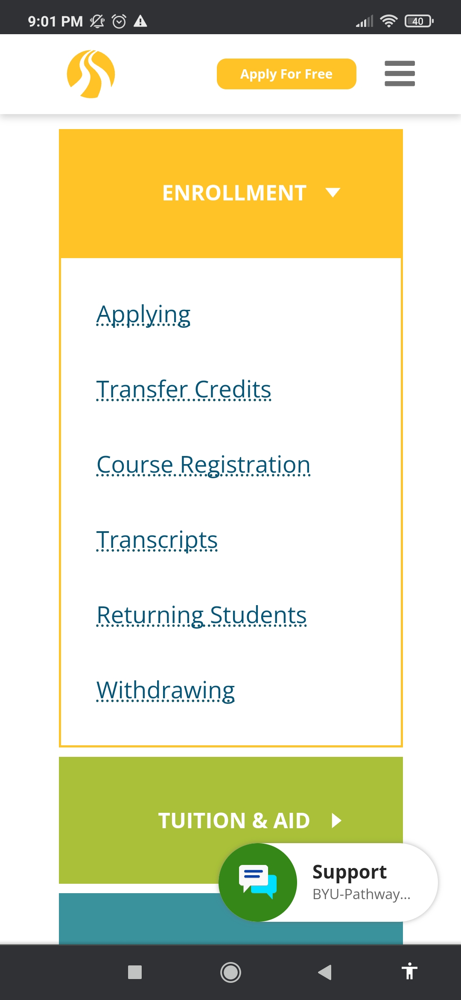
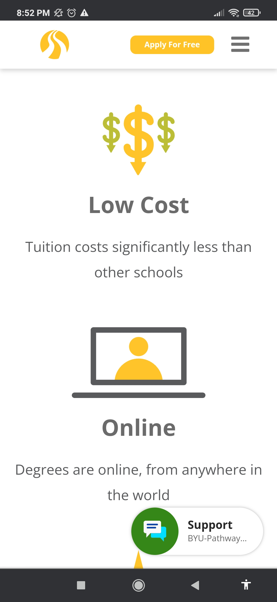
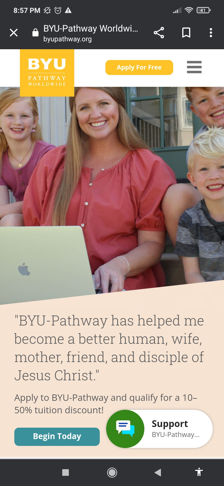

Alignment
BYU Pathway Help The subscription box is correctly aligned with the other boxes like the monthly tuition and aid. We also see well structured links.
White Space and Clean Design
BYU Home Page We can see the image and text elements connect and, at the same time organized. This type of design uses white spacing very well.
Contrast
BYU Resources The elements on this page appear well distributed and very friendly to each other from color to font. Having good contrast draws attention to what's important and catch users attention.